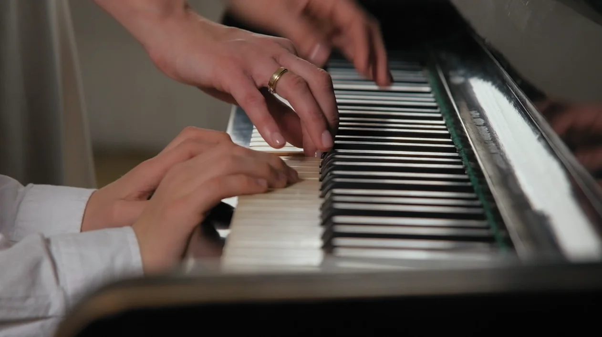
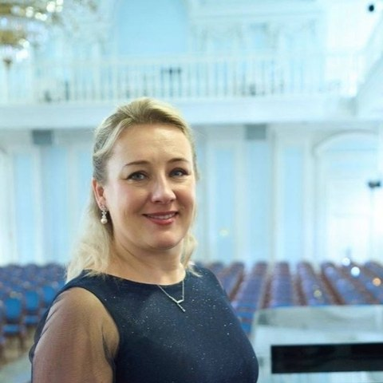

Фортепиано
Классика, эстрада, джаз и импровизация. Индивидуальные занятия с нуля или с возобновлением — для детей, подростков и взрослых.
Записаться на пробное
Авторская методика и лучшие направления фортепианной педагогики для детей с 3 лет и взрослых. Вы влюбитесь в музыку.
Направления
Классика, эстрада, джаз и импровизация. Индивидуальные занятия с нуля или с возобновлением — для детей, подростков и взрослых.
Записаться на пробноеГрупповые занятия: развитие через музыку — слух, ритм, координация и концентрация. Упражнения, направленные на развитие логики, памяти, внимания.
ПодробнееПостановка звуков и развитие речи. Занятия с логопедом в той же студии — удобно совмещать с музыкой.
ПодробнееПрограмма обучения
Программу подбираем под ученика. Делаем акцент на три опоры, на которых строится результат.
Постановка руки, чтение нот, техника и понимание гармонии — чтобы играть не «выученный кусок», а то, что хочется.
Для тех, кто планирует поступление: основа, которая поможет поступить и легче учиться в музыкальной школе. Ученикам музыкальной школы облегчаем обучение понятным объяснением сольфеджио и разбором программы по фортепиано.
Любимые треки, импровизация, подбор аккомпанемента к популярным песням.
Педагоги
Опытные профессионалы со стажем от 15 лет. Каждый ведёт ученика лично, по собственной методике.
Педагогический стаж 20 лет
Лауреат международных конкурсов и московского конкурса «за творческий подход к обучению детей». Создала собственную методику: ученики играют по всем правилам — с правильной постановкой рук — и влюбляются в музыку.
Опыт преподавания более 30 лет
Много лет работала в Московском джазовом колледже вместе с основателями методики импровизации для детей и взрослых. Её методика отличается от стандартной музыкальной школы: цель — чтобы дети и взрослые свободно владели фортепиано, а не просто играли по нотам. Большое внимание уделяет композиторству и импровизации. «Самое главное — желание, остальное можно развить».
Педагогический стаж 30+ лет
Комплексные уроки вокала, фортепиано и музыкальной грамоты для детей с 4 лет по авторским методикам — музыкальное развитие через игру и сочинение. Ведёт фортепиано и вокал и для взрослых. Не раз выступала на телевидении; её ученики участвовали в конкурсах и поступали в музыкальные вузы.
Окончила консерваторию · стаж 8+ лет
Уроки фортепиано для детей от 6 лет и взрослых. Программа подбирается индивидуально — под уровень и интересы ученика. Находит подход к подросткам: они с удовольствием идут на занятия и разучивают любимые мелодии — от классики до трендовых композиций.

Преподаёт музыку 26 лет
Преподаёт музыку детям от 4 лет и взрослым. За плечами музыкальная школа, детская театральная школа и институт театрального искусства — большой опыт педагога и концертмейстера. На занятиях ученики помимо игры на фортепиано увлечённо осваивают музыкальную грамоту.
Более 30 лет работы с детьми
Не просто логопед: дефектолог и специалист по логопедическому массажу. Ставит и автоматизирует звуки, работает с дисграфией и дислексией, устраняет миофункциональные нарушения, готовит дошкольников к чтению, письму и счёту. Помогает справиться с трудностями обучения в начальных классах и повысить успеваемость. Индивидуальный подход к каждому ребёнку.
Отзывы
Цены
Первое занятие-знакомство: педагог оценит уровень и составит индивидуальный план обучения, а также проведёт полноценное занятие.
Записаться на пробноеПолноценное занятие без абонемента — удобно, если хочется заниматься в свободном графике.
ВыбратьРегулярные занятия по выгодной цене — 2 200 ₽ за урок. Оптимально для стабильного прогресса.
ВыбратьВопросы
Зачем это ребёнку и взрослому
«Считаю, что всех без исключения детей нужно учить музыкальной грамоте»
Т. В. Черниговская — нейролингвист, профессор
30 минут знакомства с инструментом и педагогом — дальше составим индивидуальный план.